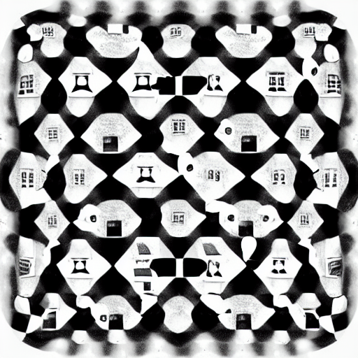

My online universe

My online universe is made of different elements:
- My digital gardne with linked notes corresponding to what Andy Matuschak would call Evergreen notes, and all types of notes that I write for myself.
- Book reviews, which are separate because Book reviews and literature notes are different things
- Journal entries, or blog posts
- Longer projects (pollsposition elections, chess, notes du bac, etc) added as git submodules. Projects are what we write for others
- Notebooks to collect references